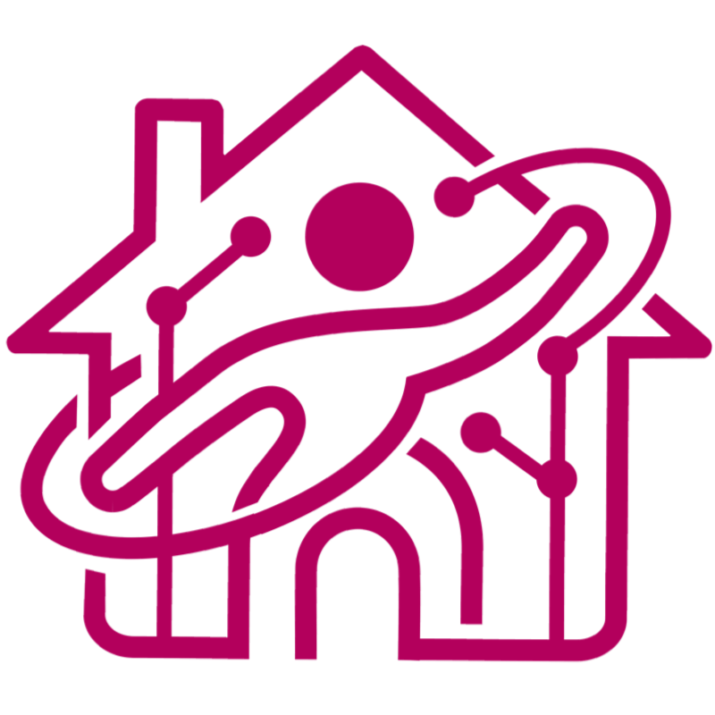

椎尾研究室
Siio Laboratory
お茶の水女子大学 理学部情報科学科 ／ 大学院人間文化創成科学研究科
椎尾研究室で行われた主な研究プロジェクトです。各プロジェクトをクリックすると、 概要・背景・システム・成果を1画面程度にまとめた個別ページをご覧いただけます。
以下は代表的な4件を掲載したサンプルです。実際のサイト構築時には、全プロジェクトのカードをこの一覧に追加してください。
生活空間にセンサーやアクチュエータを埋め込んだ実験住宅を用い、日常生活を支援するユビキタスコンピューティング技術を実証的に研究したプロジェクト。
プロジェクトを見る →単身赴任・別居高齢者・遠距離恋愛など、離れて暮らす家族や恋人をさりげなくつなぐインテリア型コミュニケーション機器の研究。
プロジェクトを見る →実世界の物体や場所を指し示すことで情報を取得・操作できる、ユビキタスコンピューティング向けポインティングデバイスの研究。
プロジェクトを見る →
【テンプレート注記】この一覧に他のプロジェクト（例：MakeupMirror、KitchenOfTheFuture、タグタンス、
お天気モンドリアン、デジタルな調度品 など）を追加する場合は、同じ <div class="card"> の
ブロックを複製し、対応する個別ページを projects/ フォルダ内に作成してください。